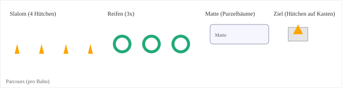

Training vom 14.04.2026 - Puzzlestaffel
Ziele
- Spielerisches Werfen und Fangen festigen
- Koordination und Balance (Pezziball & Matten)
- Teamarbeit durch Staffeln und Puzzlestaffel fördern
Aufbau (60 Minuten)
Aufwärmen (10–15 Min)
Stopp‑Missionen (schnelles Spiel, kein Aufbau)
- Dauer: 10–15 Minuten
- Material: Ein Ball pro Kind
- Durchführung: Alle Kinder bewegen sich mit Ball frei im Feld. Auf einen Pfiff gibt es eine kurze Aufgabe mit neuer Bewegungsart.
- Aufgaben:
- Aufgabe: 3× einbeinig hüpfen
- Bewegungsart danach: Rückwärtslaufen
- Aufgabe: 5× Prellen auf der Stelle
- Bewegungsart danach: Seitwärts (Sidestep) laufen
- Aufgabe: 5 Sekunden Balance auf einem Bein
- Bewegungsart danach: Hüpfen (kleine Sprünge)
- Aufgabe: Partner: 3× Handklatschen
- Bewegungsart danach: Kurz Sprint / Schnell laufen
- Aufgabe: 2× Ball hochwerfen und sicher fangen
- Bewegungsart danach: Große Schritte / Weitschritte
- Aufgabe: 3× Drehung (360°)
- Bewegungsart danach: Krabbeln (auf Händen und Knien)
- Aufgabe: 3× Ball gegen die Wand werfen und fangen
- Bewegungsart danach: Schleichen (leise, niedrig)
- Aufgabe: 3× versuchen in Basketballkorb zu werfen
- Bewegungsart danach: Hopserlauf / kleine Hüpfer
Hauptteil (35 Min)
Übung 1: Partner-Werfen & Fangen (10 Min)
- Material: Handbälle Größe 0/1, Hütchen
- Beschreibung: Paare stehen 2–4 m auseinander und werfen sich weich zu. Fokus auf Augenkontakt, Hände öffnen zum Fangen, Schritt nach vorne beim Werfen. Nach 4–5 Minuten Distanz leicht erhöhen oder ein kleines Ziel (Kegel) hinter dem Partner platzieren.
- Fokus: Werfen, Fangen, Auge‑Hand‑Koordination
- Variation: Anfänger rollen den Ball oder üben mit Luftballons.
Übung 2: Puzzlestaffel — Einfacher Nebeneinander‑Parcours (17 Min)
- Material (pro Bahn): 4 Hütchen, 3 Reifen, 1 Matte + 1 kleiner Ring, 1 kleiner Kasten + 1 Hütchen (als Ziel), 1 Handball, 1 Satz Puzzleteile (pro Team)
- Beschreibung:
- Slalom durch 4 Hütchen
- Durch 3 Reifen hüpfen
- Purzelbaume auf einer Matte - Ball in kleinem Ring nebenan ablegen
- Zielwurf: Hütchen auf kleinem Kasten anwerfen (1 Wurf). Treffer = 1 Puzzleteil für das Team.
- Ablauf: Teams starten gleichzeitig auf ihren Bahnen; Das Team, das zuerst alle Puzzle‑Teile gesammelt hat, gewinnt.
- Fokus: Kombination aus Bewegung, Wurfpräzision und Teamtaktik

Übung 3: Pezziball-Treiben (8 Min)
- Material: 1 Pezzibälle, Hütchen
- Beschreibung: Auf zwei kleinen Feldern treiben Teams den großen Pezziball durch koordiniertes Abwerfen in Richtung gegnerischer Grundlinie. Nach einem Punkt neuer Start aus der Mitte.
- Fokus: Zusammenarbeit, Koordination, Ballgefühl mit großem Ball
- Variation: Kleinere Felder für jüngere Kinder; nur Rollen statt Stoßen.
Abschluss (10 Min)
Spiel A — Feuer, Wasser, Sturm
- Dauer: 5–8 Minuten
- Material: Matten, Bänke, Hütchen
- Beschreibung: Kinder laufen frei. Bei „Feuer“ springen alle auf eine Matte; bei „Wasser“ auf eine Bank; bei „Sturm“ legen sich alle kurz flach auf den Boden. Trainer/in variiert Reihenfolge. Ziel: spielerisches Beenden und kurze Beruhigung.
Spiel B — Hühner auf der Stange
- Dauer: 5–8 Minuten
- Material: Langbank, Softbälle, Leibchen (optional)
- Beschreibung: Wie Völkerball: Wird ein Kind getroffen, geht es auf die „Stange" (Bank). Fängt ein Teammitglied den Ball, darf das Kind zurück ins Feld. Kurz, spaßig und wettkampfbetont.
Abschlussrennen
- Dauer: 3–5 Minuten
- Material: Handbälle, Hütchen (optional)
- Beschreibung: Kurzes Staffelformat (z. B. Dribbelstaffel oder Laufstaffel). Teams starten parallel oder nacheinander. Optional: kleine Aufgaben (um Hütchen laufen, Ball transportieren).
Hinweis: Wähle Spiel A oder B als Ausklang und schließe mit dem Abschlussrennen ab.
Trainerhinweise
- Pausen und Trinkpausen einplanen; Material griffbereit haben.
- Auf weiche, sichere Würfe achten (keine harten Würfe Richtung Kopf).
- Für sehr junge Kinder Übungen vereinfachen (kleinere Distanzen, Rollen statt Werfen).